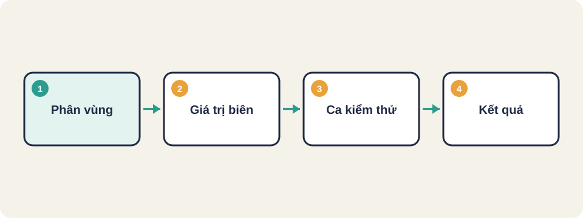
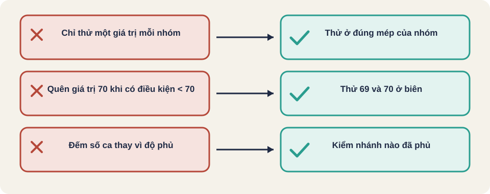

Hình vẽ gốc, dùng để minh họa thứ tự các bước chính của bài.
Một ca kiểm thử gồm đầu vào, kết quả mong đợi. Chia đầu vào thành vùng, rồi thử các giá trị ở ranh giới.

Hình vẽ gốc, dùng để minh họa thứ tự các bước chính của bài.
Chia đầu vào thành các vùng mà chương trình xử lý giống nhau. Chỉ cần thử một giá trị đại diện cho mỗi vùng.
Ví dụ điểm thi từ 0 đến 10: vùng không hợp lệ dưới 0, vùng 0 đến 10, vùng không hợp lệ trên 10.
Lỗi hay nằm ở ranh giới giữa hai vùng. Với vùng 0 đến 10, nên thử: -1, 0, 1, 9, 10, 11.
Người viết code hay nhầm < với <=, nên giá trị biên rất đáng thử.
Thuật ngữ trong slide này: Giá trị biên (boundary value): Các giá trị nằm ở mép của một khoảng hoặc điều kiện, nơi lỗi hay xảy ra vì lập trình viên dễ nhầm < với <=.
0 - 4: kém
5 - 6: trung bình
7 - 8: khá
9 - 10: giỏi
ngoài 0..10: không hợp lệCác ca nên có: -1, 0, 4, 5, 6, 7, 8, 9, 10, 11. Mỗi ngưỡng được thử ở cả hai phía.
Hàm kiểm tra tuổi hợp lệ để đăng ký (từ 13 đến 100 tuổi). Hãy liệt kê ít nhất 6 giá trị đầu vào, gồm các vùng và các giá trị biên.
Thuật ngữ trong slide này: Giá trị biên (boundary value): Các giá trị nằm ở mép của một khoảng hoặc điều kiện, nơi lỗi hay xảy ra vì lập trình viên dễ nhầm < với <=.
Gợi ý: 12, 13, 14, 99, 100, 101. Vùng hợp lệ là 13..100, vùng không hợp lệ là dưới 13 và trên 100.

Phân vùng tương đương (equivalence partition)
Giá trị biên (boundary value)
Phủ điều kiện (condition coverage)
Phủ quyết định (decision coverage)
Thuật ngữ trong slide này: Giá trị biên (boundary value): Các giá trị nằm ở mép của một khoảng hoặc điều kiện, nơi lỗi hay xảy ra vì lập trình viên dễ nhầm < với <=.
Mục tiêu là phủ được nhiều vùng xử lý nhất với số ca ít nhất.
Yêu cầu: số lượng mua từ 1 đến 20.
Diễn giả lấy một điều kiện a < 70 làm ví dụ. Hai ca a = 69 và a = 70 đã bao phủ cả hai nhánh, và kiểm được giá trị biên. Ba ca (dưới, bằng, trên 70) cũng đúng, nhưng ca thứ ba phải có lý do rõ ràng.
Nguồn: James Bach, Open Lecture on Software Testing (YouTube ILkT_HV9DVU), phụ đề tự động. Quan điểm của diễn giả, không phải chuẩn chung.
Nếu hàm nhận chữ thay vì số, có thể đi vào một đường đi thứ ba. Diễn giả nói: nếu biết đầu vào luôn nằm trong 0 đến 255 (ví dụ do bộ lọc trước đó), thì không cần ca này, nhưng phải kiểm chứng điều đó.
Nguồn: James Bach, Open Lecture on Software Testing (YouTube ILkT_HV9DVU), phụ đề tự động. Quan điểm của diễn giả, không phải chuẩn chung.
Nguồn: github.com/PaulWaltersDev/FreeLearningResourcesForSoftwareTesters, mục "Test Design and Execution". Tìm tên tài liệu trong repo để lấy liên kết.